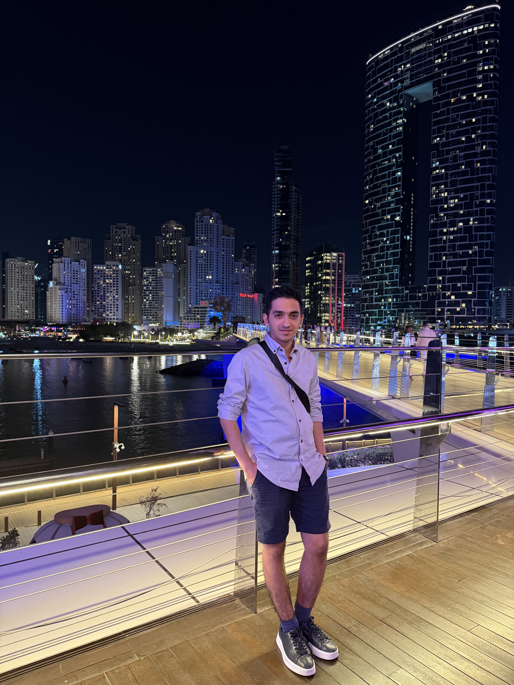

FMSoftware Engineer · Reverse Engineer · AI/ML Researcher
Istanbul, Turkey
Backend and software engineer with around ten years of experience building large-scale platforms, custom frameworks, and production systems — from ERPs and booking platforms to my own PHP MVC framework and ORM. A genuine curiosity for how things work beneath the surface pulled me into applied security and reverse engineering, where I bring the same builder's mindset to anti-bot, fingerprinting, and client-integrity systems, turning hard, undocumented problems into working tools. I also keep one foot in research, with two peer-reviewed publications on evaluating large language model reasoning. I'm happiest solving problems where the target keeps moving and the answer isn't written down anywhere.